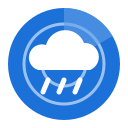

Cirro
Rain radar with a 2-hour forecast
Cirro shows the rain radar for Germany on a map and animates it from the past hour to two hours ahead, so you can see when the shower reaches you. It uses the radar nowcast that the Deutscher Wetterdienst publishes as open data.
Cirro is not affiliated with the Deutscher Wetterdienst. Map data © OpenStreetMap contributors.